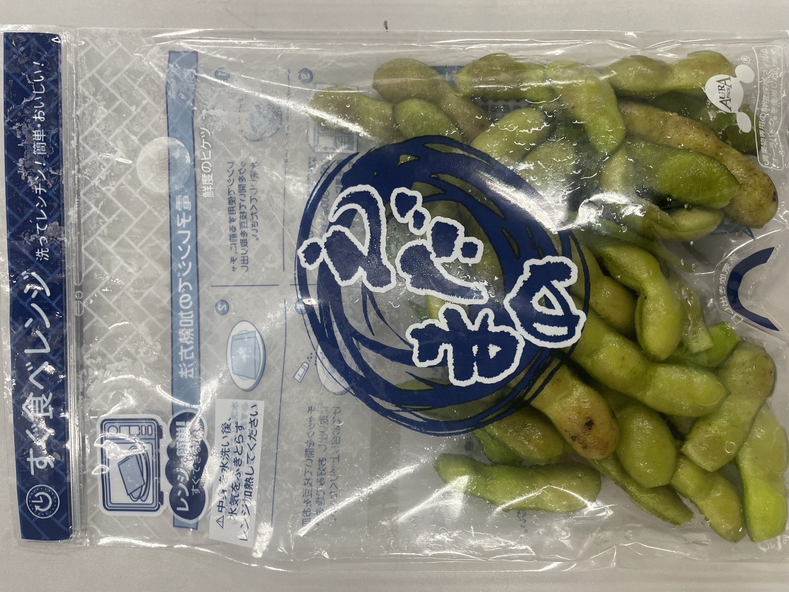
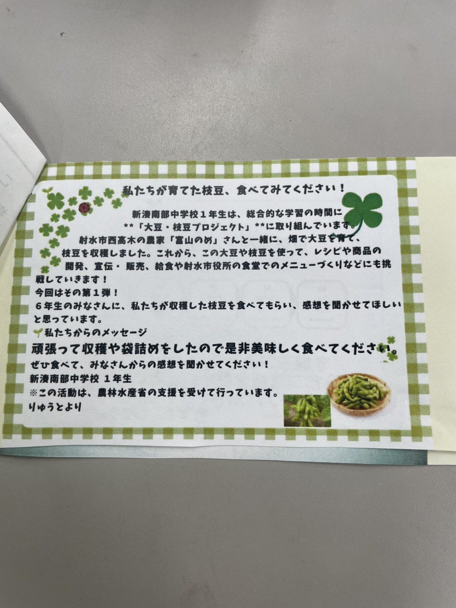
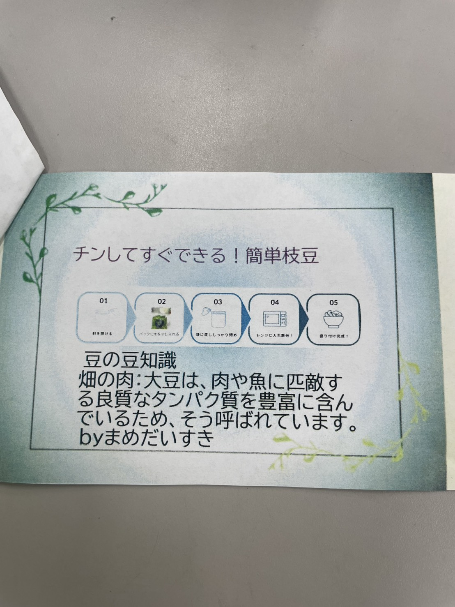
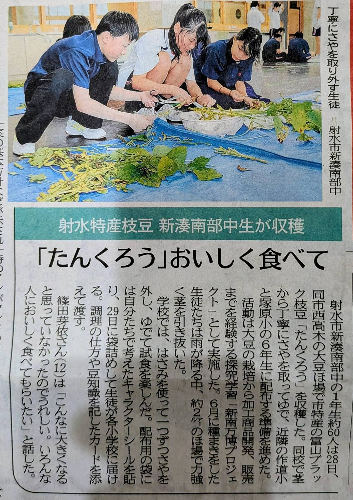
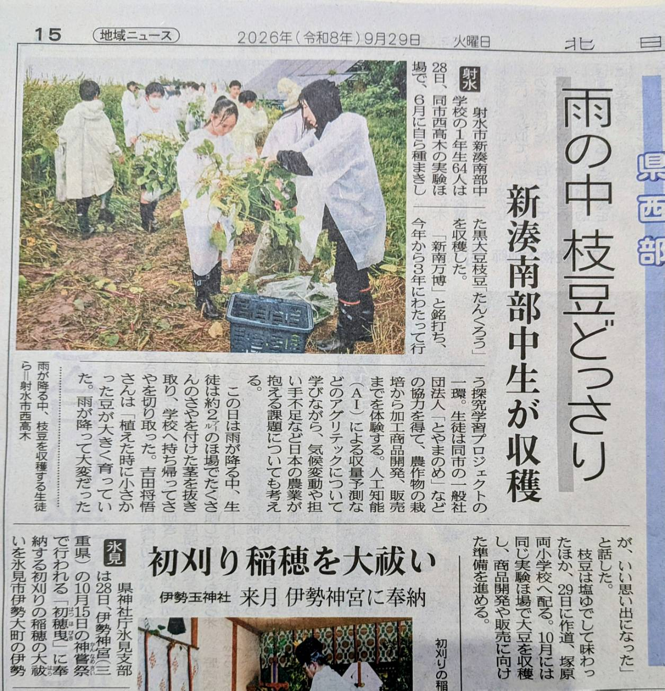

収穫から袋詰めまで
- 市内西高木の実験ほ場で、富山ブラック枝豆「たんくろう」を収穫
- 生憎の豪雨の中でも声を掛け合い、予定していた収穫作業を完了
- 学校へ持ち帰り、余分な根や葉を切り落として、さやを一つずつ丁寧に取り外す
- 下処理した枝豆をオリジナル袋へ入れ、生徒が作ったメッセージカードを同封
September 28 / 2026
新南万博プロジェクト第4弾として、新湊南部中学校1年生が枝豆を収穫しました。 豪雨の中で収穫をやり切り、学校で下処理と袋詰めを行って、育てた枝豆を地域の小学生へ届けました。
Package & Message
収穫した枝豆はオリジナル袋に詰め、プロジェクトの紹介と食べ方を記したメッセージカードと一緒に届けました。

下処理した枝豆を、手軽に調理できるオリジナル袋へ丁寧に詰めました。

新南万博の取り組みと、「ぜひ食べて感想を聞かせてください」という生徒の思いをカードにしました。

電子レンジで簡単に調理できる手順と、大豆に含まれるたんぱく質について紹介しました。
Media Coverage

枝豆「たんくろう」の収穫から学校での下処理、小学生へ届ける準備までが紹介されました。画像を押すと拡大表示できます。

豪雨の中で力を合わせて枝豆を収穫し、地域へ届ける活動の様子が紹介されました。画像を押すと拡大表示できます。